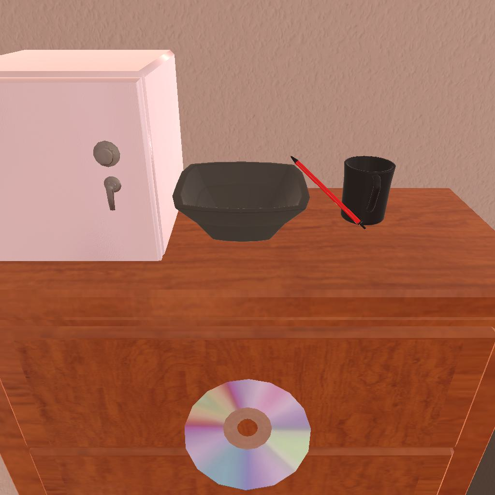

---------------------------------------------------------task: 6---------------------------------------------------------
--------------------------------------------------------------------------------------------------------------------------------------------------------------------
--------------------------------------------------------------------------------------------------------------------------------------------------------------------
Step:--------------------------------------------------------------------------4-------------------------------------------------------------------------------
----------------------------------------
VLM Prompt:
Image1:
**Instruction**
1. Analyze the provided image to identify all visible household objects, focusing on those relevant to the task description "put some cd on safe."
2. Use the analysis of the image and the task hint "The agent must find an object of the desired type, pick it up, find the correct location to place it, and put it down there." to answer the question: what is the most reasonable action in the choices for the task description "put some cd on safe"?
4. Decide and write the answer using the template: The answer is: (i): , where i is the real number. If there is no desired object in the image, search every place based on **Initial Observation** to find the object. And if no one is exactly correct, choose a similar answer.
**Initial Observation**
You are in the middle of a room. Looking quickly around you, you can see bed (1-2), dresser (1), sidetable (1-2), drawer (1-11), desk (1), garbagecan (1), safe (1)
**Answer Choices**
(1): go to bed 1
(2): go to dresser 1
(3): go to bed 2
(4): go to sidetable 1
(5): go to drawer 1
(6): go to drawer 2
(7): go to sidetable 2
(8): go to drawer 3
(9): go to drawer 4
(10): go to desk 1
(11): go to garbagecan 1
(12): go to drawer 5
(13): go to drawer 6
(14): go to drawer 7
(15): go to drawer 8
(16): go to drawer 9
(17): go to drawer 10
(18): go to drawer 11
(19): open safe 1
(20): close safe 1
(21): examine cd 1
(22): examine safe 1
**Answer**
Let's think step by step by following the instructions.
----------------------------------------
----------------------------------------
Original Response:
First, we analyze the provided image to identify all visible household objects. In the image, we can see a safe, a black bowl, a red pen, a black cup, and a CD lying on a wooden surface, which appears to be a dresser or a sidetable.
The task description is "put some cd on safe." From the image, we can see that there is a CD on the wooden surface, which is relevant to the task. According to the task hint, the agent must find an object of the desired type (in this case, a CD), pick it up, find the correct location to place it, and put it down there. The correct location for this task is on the safe.
Based on the Initial Observation, we know that we are in the middle of a room, and we can see various furniture items, including a safe. The image shows the CD and the safe quite clearly.
Now, let's look at the answer choices to determine the most reasonable action for the task description "put some cd on safe." Since we can already see the CD in the image, we do not need to go to any other location to find a CD. The next logical step would be to pick up the CD and place it on the safe.
The answer choices do not have an option to pick up the CD directly, but we can assume that examining the CD would be the first step in the process of picking it up. Therefore, the most reasonable action from the choices given would be to examine the CD, after which we could assume the agent would pick it up and complete the task.
The answer is: (21): examine cd 1.
----------------------------------------
----------------------------------------
>>> Refine Original VLM Response and Get Pure Action: examine cd 1
----------------------------------------
-----------------------------------------------------------------
Running time: 17.213892698287964 seconds
Total Money: 1.7839899999999995
-----------------------------------------------------------------
-----------------------------------------------------------------
Text Observation:This is a normal cd 1
-----------------------------------------------------------------
UNSUCCEED